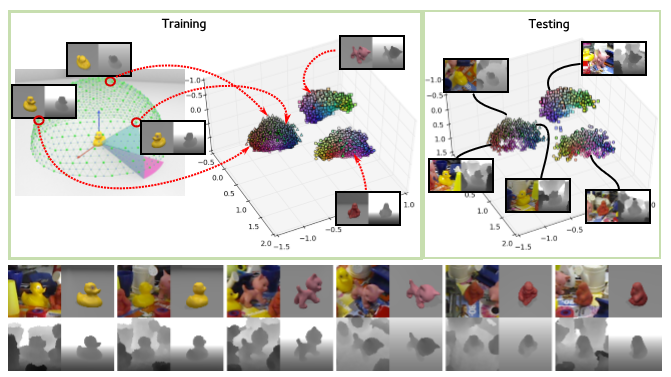
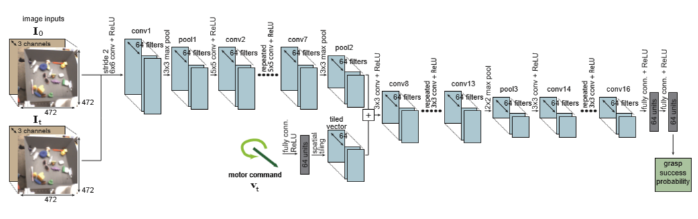

Presentation.
On November 22nd, we had our Second NCRAI Meeting, in which every member of the NCRAI had to present their project status and remaining tasks for this semester.
Therefore part of this week was dedicated for the preparation of my presentation. After the Presentation, The Review panel gave suggestions for my prject and asked to look into Machine learning frameworks for my object detection and pose estimation.
Continuation State of the art
Recently, the field of computer vision saw major breakthroughs in the classification and detection tasks due to the developments of deep learning and convolutional neural networks (CNN).These advances led to increased employment of convolutional neural networks for solving the industrial and academical problems. Despite the popularity of CNNs, they have not yet been widely applied for the bin picking task. Some of the applications have been described in Papers and thesis on this subject
In a paper, CNN is used to segment an object in an RGBD image(a color image with an additional depth channel), which is followed by shape matching of the segmented part and the known 3D model, which is carried out with iterative closest point and 3D Match. Another application is presented in an paper as, where the task of 3D pose estimation is divided into two parts: first, a descriptor of an image patch is generated; and second, the nearest neighbor search is used to determine the orientation and class of the object presented in the image. The descriptor is generated in such a way that similar image patches are described by similar vectors (whose absolute difference is a small value), and this allows creating a database of images of objects observed from different positions, and determine the orientation of an object in a test image as the nearest neighbor (by comparing the descriptor vectors) in the database.

The task of creating a descriptor for an image patch (RBG or RGBD) is handled by a convolutional neural network. An advanced grasping system is described in a conference. Here, learning of the grasping behavior is handled in an end-to-end manner, without an intermediate representation of the object pose. Learning the grasping model in this way is conceptually elegant, but is unfeasible for many researchers because of the cost of the equipment (multiple robotic manipulators are used for learning).

Computer vision is a part of computer science that deals with image analysis for obtaining high-level knowledge of the image content. Computer vision methods play an important role in the developed framework, as images are used to determine the current state, and this estimate is then used to guide the robot for bin picking.
Machine learning is widely used in computer vision. It is a technology that gives computers the ability to make decisions by learning an appropriate model of a given task based on data instead of explicitly programming the behavior of the system.
Object detection is a common problem in computer vision. This is the task of finding a region in an image where the target object is localized. The region is usually defined by a rectangular area, which is also commonly called a bounding box.